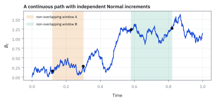
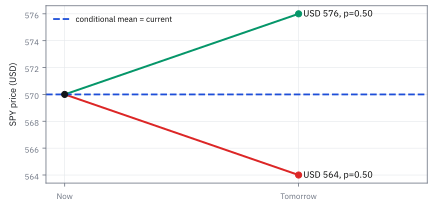
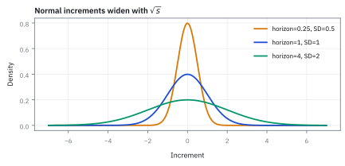
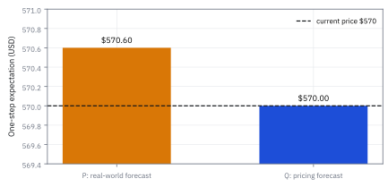

9.1 Filtrations and the Definition of a Martingale
เมื่อข้อมูลโตขึ้น แต่ conditional forecast ยังปักอยู่ที่ราคาปัจจุบัน
คุณเริ่มด้วยเงิน \$100 แล้วเดิมพันเหรียญเที่ยงตรงรอบละ \$10 ผ่านไปสามรอบ ชนะสองแพ้หนึ่ง ตอนนี้มี \$110 ค่าเฉลี่ยของเงินหลังรอบถัดไปคือเท่าไร แล้วหลังอีกสิบรอบล่ะ?
เฉลย: \$110 ทั้งสองคำถาม รอบถัดไปได้ \$120 หรือ \$100 อย่างละครึ่ง เฉลี่ย \$110 และอีกสิบรอบก็ยังเฉลี่ย \$110 เพราะทุกรอบเฉลี่ยได้ศูนย์ ประวัติว่าชนะมาสองรอบไม่ช่วยทายอะไรเลย สิ่งเดียวที่ใช้ได้คือเงินที่มีตอนนี้
กระบวนการที่ค่าเฉลี่ยของอนาคต เมื่อรู้ทุกอย่างที่เห็นมาแล้ว เท่ากับค่าปัจจุบันพอดี เรียกว่า martingale และกองข้อมูลที่รู้ถึงแต่ละเวลาเรียกว่า filtration หัวข้อนี้ใช้สองคำนี้เป็นฐานของการตั้งราคา derivative ทั้งหมด
ศัพท์ที่ใช้ในหัวข้อนี้
- filtration
- กองข้อมูลทั้งหมดที่รู้ถึงแต่ละเวลา ซึ่งมีแต่โตขึ้นและไม่ลืมของเดิม ใช้ระบุว่า forecast หรือกฎการเทรดใช้ข้อมูลอะไรได้บ้าง ณ แต่ละเวลา
- stochastic process
- ลำดับของค่าที่ยังไม่รู้ล่วงหน้าเรียงตามเวลา เช่นราคาทุกวัน ใช้แทนราคา มูลค่าพอร์ต หรือสัญญาณตลอดเส้นทาง
- conditional expectation
- ค่าเฉลี่ยของอนาคตเมื่อใช้ข้อมูลที่รู้แล้ว ใช้สรุปคำทายของอนาคตจากมุมมองวันนี้ (สร้างเต็มในหัวข้อ 2.1)
- martingale
- กระบวนการที่ค่าเฉลี่ยของอนาคต เมื่อรู้ข้อมูลถึงวันนี้ เท่ากับค่าวันนี้พอดี ใช้เขียนว่าเกมยุติธรรม หรือราคาไม่มีแนวโน้มที่ทายล่วงหน้าได้
- drift
- ค่าเฉลี่ยที่เปลี่ยนไปต่อหนึ่งช่วงเวลา ใช้บอกแนวโน้มเฉลี่ย โดยไม่บังคับทิศของทุกเส้นทาง
- probability measure
- ชุดน้ำหนักโอกาสที่ให้กับทุกสถานการณ์ ใช้กำหนดว่าค่าเฉลี่ยที่คำนวณถ่วงด้วยโอกาสชุดไหน
- submartingale
- กระบวนการที่ค่าเฉลี่ยของพรุ่งนี้ไม่ต่ำกว่าวันนี้ ใช้เขียนสิ่งที่มีแนวโน้มขึ้นเฉลี่ย เช่นพอร์ตที่มี edge จริง เส้นทางเดี่ยวยังลงหนักได้
- supermartingale
- กระบวนการที่ค่าเฉลี่ยของพรุ่งนี้ไม่สูงกว่าวันนี้ ใช้เขียนสิ่งที่ค่อย ๆ ถูกกัดกร่อน เช่นเงินของผู้เล่นที่เสียเปรียบเจ้ามือ ชื่อ super ไม่ได้แปลว่าดี
- risk-neutral measure
- ชุดน้ำหนักโอกาสสำหรับตั้งราคา ที่ทำให้ราคาสินทรัพย์หลังคิดลดเป็น martingale ใช้แปลงเงื่อนไขไม่มีเงินฟรีเป็นสมการราคา ไม่ใช่คำทายโอกาสในโลกจริง
- no-arbitrage
- เงื่อนไขที่ไม่มีพอร์ตต้นทุนศูนย์ที่กำไรแน่นอนโดยไม่มีทางขาดทุน ใช้เป็นฐานของการตั้งราคา derivative
- underlying
- สินทรัพย์อ้างอิงที่มูลค่าของสัญญาผูกอยู่ ใช้ระบุว่าราคาใดเป็นต้นทางของ payoff
- payoff
- เงินที่สัญญาจ่ายตามผลที่เกิดจริง ณ เวลาที่กำหนด ใช้เชื่อมสถานการณ์ของ underlying เข้ากับมูลค่าสัญญา
- SPY
- กองทุนสหรัฐที่ติดตาม S&P 500 ใช้เป็นตัวอย่างราคาที่ desk ประเมิน
- random walk
- เส้นทางที่ได้จากการบวกก้าวสุ่มทีละก้าวโดยก้าวใหม่ไม่สนใจอดีต ใช้จำลองราคาที่ขยับทีละนิด และเป็นตัวอย่างแรกของ martingale ที่ตรวจได้ด้วยมือ
- Cauchy distribution
- รูปแบบหางอ้วนมากจนค่าเฉลี่ยหาไม่ได้ ใช้แสดงว่าทำไมนิยาม martingale ต้องขอให้ค่าเฉลี่ยของขนาดมีค่าจำกัด (เห็นครั้งแรกในหัวข้อ 1.11)
สัญลักษณ์ที่ใช้ในหัวข้อนี้
| สัญลักษณ์ | ความหมาย | หน่วย |
|---|---|---|
| $n$, $m$ | เวลาปัจจุบัน และจำนวนก้าวที่มองไปข้างหน้า | ก้าว |
| $X_n$ | ค่าของกระบวนการ ณ เวลา $n$ เช่นเงินหรือราคา | USD |
| $C_i$ | ผลของเหรียญรอบที่ $i$ เป็น +1 หรือ −1 | — |
| $\mathbb E_n[\cdot]$ | ค่าเฉลี่ยเมื่อรู้ทุกอย่างที่เห็นมาจนถึงเวลา $n$ ตำราเขียนเต็มว่า conditional expectation บน filtration | หน่วยของตัวข้างใน |
| $P$, $Q$ | น้ำหนักโอกาสของโลกจริง และของการตั้งราคา | 0 ถึง 1 |
| $S_t$ | ราคา underlying ณ เวลา $t$ | USD |
| $B_t$ | มูลค่าบัญชีเงินสดที่โตตามอัตราปลอดความเสี่ยง | USD |
| $\widetilde S_t$ | ราคาหลังคิดลด เท่ากับ $S_t/B_t$ | หน่วยบัญชีเงินสด |
ที่มาที่ไป: ชื่อที่มาจากระบบพนันที่ทำให้คนหมดตัว
คำว่า martingale เดิมเป็นชื่อระบบพนันของฝรั่งเศส ที่บอกให้เพิ่มเงินเดิมพันเป็นสองเท่าทุกครั้งที่แพ้ ดูเหมือนชนะแน่นอน แต่ทำให้คนหมดตัวมานับไม่ถ้วน หัวข้อ 9.3 จะคำนวณว่าทำไม
นักคณิตศาสตร์หยิบคำนี้มาเรียกสิ่งที่ตรงข้ามกับที่นักพนันหวัง คือกระบวนการที่ไม่ว่าจะดูอดีตมานานแค่ไหน ค่าเฉลี่ยของอนาคตก็ยังเท่ากับค่าปัจจุบัน ในการเงิน ราคาที่คิดลดแล้วในตลาดที่ไม่มีเงินฟรีต้องเป็นแบบนี้พอดี ข้อสังเกตนั้นคือรากของการตั้งราคา derivative
ขั้นที่ 1 — เกมเหรียญ: ค่าเฉลี่ยของรอบถัดไปคือเงินที่มีตอนนี้
เงินหลัง $n$ รอบคือเงินตั้งต้นบวก \$10 คูณผลของทุกเหรียญ ถ้ารู้ผลของเหรียญถึงรอบที่ $n$ แล้ว สิ่งเดียวที่ยังสุ่มในรอบถัดไปคือเหรียญใบใหม่
เงินที่มีตอนนี้รู้แล้ว จึงออกมานอกค่าเฉลี่ยได้ตามหัวข้อ 2.1 ส่วนเหรียญใบใหม่ไม่รู้ว่าสามรอบก่อนออกอะไร ค่าเฉลี่ยของมันจึงเป็นศูนย์เสมอ คำทายที่ดีที่สุดของเงินรอบหน้าจึงเป็นเงินตอนนี้
ขั้นที่ 2 — กองข้อมูลโตขึ้นทุกรอบ และไม่เคยลืม
คำว่ารู้ทุกอย่างที่เห็นมาแล้วต้องนิยามให้ชัด เพราะ forecast ที่แอบใช้ข้อมูลอนาคตไม่ใช่แบบจำลอง แต่เป็นการโกง ตำราเรียกกองข้อมูลนี้ว่า filtration
ทุกรอบกองข้อมูลได้เหรียญใหม่เพิ่มหนึ่งใบ และเก็บของเดิมไว้ครบ เงินที่มีตอนนี้คำนวณได้จากกองนี้เสมอ นี่คือเงื่อนไขที่ตำราเรียกว่ากระบวนการต้องรู้ค่าได้ ณ เวลานั้น
$\mathbb E_n$ ใช้ได้แค่ของในกองของเวลา $n$ ในงานจริง กองนี้คือราคาและข่าวที่มาถึงแล้ว ไม่รวมราคาพรุ่งนี้ และไม่รวมตัวเลขเศรษฐกิจที่ถูกแก้ย้อนหลังในภายหลัง
Figure 9.1a — กองข้อมูลโตขึ้นตามเวลา

กรอบที่ใหญ่ขึ้นทุกวันบังคับให้ทุก forecast ใช้ได้เฉพาะข้อมูลที่มาถึงแล้ว ราคาในอนาคตอยู่นอกกรอบจนกว่าจะถึงเวลาของมัน
ขั้นที่ 3 — นิยามของ martingale: สามเงื่อนไข
เกมเหรียญผ่านทั้งสามข้อ ข้อแรกกับข้อสองกันไม่ให้สูตรพัง ข้อสามคือหัวใจที่ใช้ตลอดทั้งบท
ข้อหนึ่ง: ค่าวันนี้ต้องคำนวณได้จากเหรียญที่ออกแล้วด้วยสูตรใดก็ได้ $g_n$ ข้อสอง: ค่าเฉลี่ยของขนาดต้องมีค่าจำกัด ข้อสาม: ค่าเฉลี่ยของทุกระยะข้างหน้าเท่ากับค่าวันนี้ การพูดว่าอะไรเป็น martingale ต้องบอกด้วยเสมอว่าใช้กองข้อมูลไหนและน้ำหนักโอกาสชุดไหน
ขั้นที่ 4 — ทำไมต้องมีข้อสอง: ลองตัดทิ้งแล้วดูว่าพังตรงไหน
ผลตอบแทนหลายสินทรัพย์หางอ้วนกว่าระฆังมาก ยิ่งหางอ้วน ค่าเฉลี่ยจากข้อมูลจริงยิ่งไม่ยอมนิ่ง ลองเดินสุ่มที่แต่ละก้าวเป็น Cauchy ของหัวข้อ 1.11
หน้าตาสมมาตรสวยงาม ตรงกลางดูปกติ แต่ integral ของขนาดก้าวออกมาเป็น log ที่โตไม่หยุด เพราะหางอ้วนเกินไป
พอค่าเฉลี่ยของขนาดไม่มีค่า ค่าเฉลี่ยเมื่อรู้อดีตก็ไม่มีค่าไปด้วย ข้อสามจึงไม่ใช่ข้อความที่ผิด แต่เป็นข้อความที่เขียนไม่ได้เลย ข้อสองจึงไม่ใช่งานธุรการ
ขั้นที่ 5 — ตรวจ SPY หนึ่งก้าว
SPY ราคา \$570 วันพรุ่งนี้มีสองปลายทางในแบบจำลองง่าย คือ \$576 หรือ \$564 อย่างละครึ่ง ข้อมูลมีถึงวันนี้เท่านั้น
ปลายทางห่างจาก \$570 ข้างละ \$6 เท่ากันและน้ำหนักเท่ากัน คำทายจึงเท่ากับราคาวันนี้ ผ่านข้อสาม ถ้าโลกจริงให้ขาขึ้น 55% ค่าเฉลี่ยกลายเป็น \$570.60 ซึ่งสูงกว่าราคาวันนี้ กระบวนการเดียวกันจึงไม่เป็น martingale ภายใต้น้ำหนักชุดนั้น
Figure 9.1b — คำทายของพรุ่งนี้คือจุดสมดุล

ปลายทางห่างจาก \$570 เท่ากันและมีน้ำหนักเท่ากัน จึงหักล้างกันที่ราคาปัจจุบัน แม้แต่ละเส้นทางจะไม่หยุดนิ่ง
ขั้นที่ 6 — จากหนึ่งก้าวไปหลายก้าว: ตรวจก้าวเดียวพอ
นิยามพูดถึงทุกระยะ $m$ แต่ตรวจแค่ก้าวเดียวก็พอ เพราะกฎเฉลี่ยสองชั้นของหัวข้อ 2.1 ยุบคำทายซ้อนกันทีละก้าว
ทายของปลายทางจากมุมก้าวสุดท้ายก่อน ได้ค่าของก้าวก่อนหน้า แล้วถอยทีละก้าวจนถึงวันนี้ เกมเหรียญหลังสิบรอบจึงยังเฉลี่ย \$110 ตามคำถามเปิด proof ว่าอะไรเป็น martingale จึงมักสั้นกว่าหน้าตานิยาม
ขั้นที่ 7 — นิยามของญาติสองทิศ: เอียงขึ้นกับเอียงลง
ของจริงบนโต๊ะแทบไม่เท่ากันเป๊ะ มักเอียงขึ้นหรือลงเล็กน้อย จึงต้องมีชื่อเรียกไว้ ทั้งสองชื่อพูดถึงค่าเฉลี่ยเท่านั้น ไม่ได้บังคับทิศของทุกเส้นทาง
SPY ที่ขาขึ้น 55% ในขั้นที่ 5 คือ submartingale เงินของผู้เล่นรูเล็ตที่เสียเปรียบเจ้ามือคือ supermartingale กระบวนการจะเป็น martingale ก็ต่อเมื่อเป็นทั้งสองพร้อมกัน เพราะไม่ลดและไม่เพิ่มบังคับให้เท่าเดิมพอดี
Figure 9.1c — แนวโน้มของค่าเฉลี่ย ไม่ใช่ทิศของทุกเส้นทาง

เส้นทางทั้งสามกลุ่มแกว่งขึ้นลงคล้ายกัน แต่ค่าเฉลี่ยของหลายเส้นทางแยกเป็นขาขึ้น ราบ และขาลง martingale คุมค่าเฉลี่ย ไม่ได้คุมความเสี่ยง
จุดเชื่อมไป derivative pricing
ภายใต้น้ำหนักโอกาสสำหรับตั้งราคา $Q$ และเงื่อนไขไม่มีเงินฟรี ราคาหลังคิดลดด้วยบัญชีเงินสดของสินทรัพย์ที่ไม่จ่ายเงินระหว่างทางเป็น martingale ถ้ามีเงินปันผลต้องรวมเงินปันผลเข้าไปด้วย
ประโยคนี้ไม่ได้บอกว่า SPY ไม่มีผลตอบแทนคาดหวังในโลกจริง มันบอกว่าเมื่อเปลี่ยนหน่วยเงินและน้ำหนักโอกาสสำหรับตั้งราคาแล้ว ไม่มีแนวโน้มเหลือให้สร้างกำไรไร้ความเสี่ยง
ขั้นที่ 8 — นิยามของ risk-neutral measure: ราคาที่คิดลดแล้วเป็น martingale
บรรทัดนี้เป็นนิยามของสิ่งที่ตามหา คือชุดน้ำหนักโอกาสที่ทำให้ราคาคิดลดแล้วเฉลี่ยไม่ขยับ คำถามว่ามันมีจริงไหมและสร้างอย่างไรเป็นงานของหัวข้อ 12.6
ราคาดิบไม่ใช่ martingale เพราะเงินสดเองโตตามดอกเบี้ย แต่เมื่อวัดราคาเป็นจำนวนหน่วยของบัญชีเงินสด ค่าเฉลี่ยใต้ $Q$ ของราคาปลายทางเท่ากับราคาวันนี้พอดี นี่คือสิ่งที่ทำให้สูตรตั้งราคาทุกตัวทำงาน
ขั้นที่ 9 — ตรวจบนต้นไม้สองก้าว: ต้องจริงทุกโหนด
ราคา 100 ขึ้นได้ 1.1 เท่าหรือลงเหลือ 0.95 เท่าทุกก้าว โอกาสที่ทำให้ราคาเป็น martingale ไม่ได้เลือกเอง แต่แก้จากสมการเดียว แล้วต้องตรวจทุกโหนดของเวลานั้น
สมการบอกว่าค่าเฉลี่ยของตัวคูณต้องเป็น 1 แก้ได้ $p=1/3$ ซึ่งไม่ใช่โอกาสในโลกจริง แต่เป็นโอกาสที่ทำให้เงื่อนไขเป็นจริง
โหนดขึ้นเฉลี่ยกลับมาที่ 110 โหนดลงเฉลี่ยกลับมาที่ 95 ผ่านทั้งสองโหนด จึงสรุปว่าเป็น martingale ถ้าผ่านโหนดเดียวยังสรุปไม่ได้ ขั้นถัดไปแสดงตัวอย่างนั้น
ขั้นที่ 10 — ต้นไม้ที่โหนดหนึ่งผ่าน อีกโหนดไม่ผ่าน จึงไม่ใช่ martingale
เปลี่ยนตัวคูณให้ต่างกันที่สองโหนด โหนดล่างยังผ่าน แต่โหนดบนไม่ผ่าน
โหนดบนเฉลี่ยได้ 108.17 ต่ำกว่าราคาปัจจุบัน 110 เงื่อนไขไม่จริงที่โหนดนี้ โหนดล่างเฉลี่ยได้ 95 พอดี ผ่านโหนดเดียวไม่พอ กระบวนการนี้จึงไม่ใช่ martingale
สองบรรทัดสุดท้ายใช้ต้นไม้เดิมของขั้นที่ 9 กับโอกาสโลกจริงครึ่งต่อครึ่ง ได้ 112.75 สูงกว่า 110 เป็น submartingale ภายใต้น้ำหนักชุดนั้น
Figure 9.1d — น้ำหนักโอกาสเปลี่ยนคำทาย

สถานการณ์ชุดเดิมให้คำทาย \$570.60 ภายใต้น้ำหนักโลกจริง แต่ให้ \$570.00 ภายใต้น้ำหนักสำหรับตั้งราคา การเป็น martingale จึงเป็นสมบัติของกระบวนการพร้อมกองข้อมูลและน้ำหนักโอกาส
คำตอบของ risk desk
โจทย์ให้อะไรมาบ้าง: SPY ราคาปัจจุบัน \$570 วันพรุ่งนี้มีสองสถานะคือ \$576 หรือ \$564 ด้วยน้ำหนัก 0.50 ต่อทาง และข้อมูลมีถึงวันนี้เท่านั้น
คำตอบ: คำทายคือ \$570 เท่ากับราคาปัจจุบัน จึงผ่านการตรวจ martingale หนึ่งก้าว
ตรวจเองใน 10 วินาที: 576 บวก 564 ได้ 1,140 หารสองได้ 570
แปลว่าอะไร: ถ้าโลกจริงให้ขาขึ้น 0.55 คำทายเป็น \$570.60 และกระบวนการนี้เป็น submartingale ภายใต้น้ำหนักโลกจริง กับดักคือเอาน้ำหนักโลกจริงกับน้ำหนักสำหรับตั้งราคามาใช้สลับกัน
ตัวอย่างที่สอง — คำตอบและวิธีเช็ก
โจทย์ให้อะไรมาบ้าง: ต้นไม้สองก้าวที่มีสองโหนดที่เวลาหนึ่ง โหนดแรกตรวจผ่านแล้ว โหนดที่สองยังไม่ได้ตรวจ
คำตอบ: ต้นไม้ที่ใช้ตัวคูณเดียวกันทุกโหนดเป็น martingale เพราะผ่านทั้งสองโหนด ส่วนต้นไม้ที่ตัวคูณต่างกันไม่เป็น เพราะผ่านเพียงโหนดเดียว
ตรวจเองใน 10 วินาที: นับจำนวนโหนดของเวลานั้นก่อน แล้วตรวจให้ครบทุกโหนด ถ้าตรวจไม่ครบ ยังสรุปไม่ได้
แปลว่าอะไร: เวลาตรวจว่าแบบจำลองตั้งราคาถูกครบทุกสถานะ ต้องตรวจทุกโหนด ไม่ใช่ตัวแทนสองสามกรณี เพราะข้อบกพร่องมักอยู่ที่สถานะที่ไม่ได้ตรวจ
กับดัก: martingale ไม่ได้แปลว่าราคาคงที่หรือปลอดภัย
เกมเหรียญของคำถามเปิดเป็น martingale แต่หลังสิบรอบ เงินอาจอยู่ที่ \$10 หรือ \$210 ก็ได้ ความเหวี่ยงโตขึ้นเรื่อย ๆ martingale คุมเฉพาะค่าเฉลี่ย และสัญญาณที่อยู่นอกกองข้อมูลอาจเปลี่ยนคำตอบได้ คำกล่าวว่าตลาดเป็น martingale ต้องบอกกระบวนการ กองข้อมูล และน้ำหนักโอกาสทุกครั้ง
ข้อจำกัด: วิธีนี้สมมติอะไร และของจริงเป็นอย่างไร
| เรื่อง | วิธีนี้สมมติว่า | ของจริงเป็นอย่างไร | ผลที่ตามมาเวลาใช้งาน |
|---|---|---|---|
| ข้อมูลที่มี | รู้ชัดว่าตอนนั้นมีข้อมูลอะไร | ข้อมูลจริงมาถึงช้าและถูกแก้ย้อนหลัง | ตัวเลขเศรษฐกิจถูกปรับหลังประกาศ การใช้ค่าที่ปรับแล้วคือการมองอนาคต |
| คำทายที่ดีที่สุด | ค่าปัจจุบันคือคำทายที่ดีที่สุด | จริงในแบบจำลอง ไม่ใช่ข้อเท็จจริงของตลาด | เป็นสมมติฐานเพื่อตั้งราคา ไม่ใช่ข้อสรุปว่าทายตลาดไม่ได้เลย |
| ต้นทุน | ไม่มีต้นทุนการซื้อขาย | มีเสมอ | กลยุทธ์ที่ดูคุ้มในแบบจำลองอาจขาดทุนจริงหลังหักต้นทุน |
แถวแรกเป็นสาเหตุของการรั่วข้อมูลที่พบบ่อยที่สุดในงานวิจัยเชิงปริมาณ
แล้วเอาไปใช้ทำอะไรได้จริงบ้าง
ใช้เป็นกฎเหล็กของการทดสอบย้อนหลัง: ทุกการตัดสินใจต้องใช้เฉพาะข้อมูลในกองของเวลานั้น การเผลอใช้ข้อมูลอนาคตคือความผิดพลาดที่ทำให้ backtest ดูดีจนหลอกตัวเอง
ใช้เป็นนิยามของตลาดที่ไม่มีเงินฟรี และเป็นเครื่องมือพิสูจน์ในบทถัดไปเกือบทุกหัวข้อ ตั้งแต่การตั้งราคา option ไปจนถึงการวัดความเสี่ยง
โค้ดตรวจเงื่อนไข martingale บนเกมเหรียญและต้นไม้สองก้าว
import numpy as np
from itertools import product
path = [1, 1, -1]
Xn = 100 + 10 * sum(path)
assert Xn == 110 and 0.5 * (Xn + 10) + 0.5 * (Xn - 10) == 110
future = [100 + 10 * (sum(path) + sum(f)) for f in product([1, -1], repeat=4)]
assert np.mean(future) == Xn # four more rounds: still 110 on average
assert 0.5 * 576 + 0.5 * 564 == 570 and abs(0.55 * 576 + 0.45 * 564 - 570.60) < 1e-9
p = (1 - 0.95) / (1.1 - 0.95)
assert abs(p - 1 / 3) < 1e-12 and abs(p * 110 + (1 - p) * 95 - 100) < 1e-12
assert abs(p * 121 + (1 - p) * 104.5 - 110) < 1e-12 and abs(p * 104.5 + (1 - p) * 90.25 - 95) < 1e-12
assert abs(p * 115.5 + (1 - p) * 104.5 - 108.17) < 5e-3 and abs(p * 114 + (1 - p) * 85.5 - 95) < 1e-12
assert abs(0.5 * 121 + 0.5 * 104.5 - 112.75) < 1e-12โค้ดไล่ทุกเส้นทางของอีกสี่รอบแล้วได้ค่าเฉลี่ย 110 เท่าเงินตอนนี้ ตรวจ SPY หนึ่งก้าว หา p = 1/3 ของต้นไม้ และยืนยันว่าทุกโหนดผ่าน ส่วนต้นไม้ที่สองตกที่โหนดบน 108.17 ≠ 110
สรุปที่ใช้ได้จริง
- filtration คือกองข้อมูลที่รู้ถึงแต่ละเวลา มีแต่โตขึ้นและไม่ลืม เขียนค่าเฉลี่ยเมื่อรู้กองนี้ว่า $\mathbb E_n$
- martingale ต้องรู้ค่าได้ ณ เวลานั้น มีค่าเฉลี่ยของขนาดจำกัด และค่าเฉลี่ยของอนาคตเท่ากับค่าปัจจุบัน เช่นเกมเหรียญที่มี \$110 ก็ทาย \$110
- ตรวจก้าวเดียวพอ เพราะกฎเฉลี่ยสองชั้นยุบทุกระยะกลับมาเอง แต่ต้องตรวจครบทุกโหนดของเวลานั้น
- martingale คุมค่าเฉลี่ย ไม่ได้คุมความเสี่ยง และเป็นสมบัติของกระบวนการพร้อมกองข้อมูลและน้ำหนักโอกาส
- submartingale คาดว่าจะโต supermartingale คาดว่าจะหด martingale คือเป็นทั้งสองพร้อมกัน
- ราคาคิดลดเป็น martingale ภายใต้ $Q$ สำหรับตั้งราคา ไม่ใช่คำกล่าวเรื่องแนวโน้มในโลกจริงภายใต้ $P$